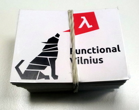

Functional Vilnius #3: Living without Objects and with Free Monads
Posted on April 14, 2015
by Ignas
Hi friends,
The end of the month is near and so is our next meetup.
Date and venue
- Date: Wednesday, April 29, 19:00
- Place: Adform, 5th floor, J. Jasinskio g. 16C
- Map: https://goo.gl/maps/mAo0f
Some announcements
- We now have a Code of Conduct, please read it and respect it.
- We’ll be handing out stickers, which look like this:
 - We have spots for some lightning talks? Want to give one? Write to us.
Speakers and talks
“Free Monads”, Alexander Gryzlov, Adform
In the previous meetup, Rolandas has warmed you up with the monad introduction and now it’s time for something more. Alex will present the very cool concept of Free Monads in Scala.
For homework reading:
- Excellent blog post on the topic (though in Haskell):
http://www.haskellforall.com/2012/06/you-could-have-invented-free-monads.html - Pretty much the same thing as above, but translated to Scala(z):
http://eed3si9n.com/learning-scalaz/Free+Monad.html
“Living without Objects”, Osvaldas Grigas, Inventi
Abstract: “Transitioning from OOP to FP can be quite challenging, not least because OO programmers are not used to thinking in terms of verbs instead of nouns. Non-hybrid functional languages do not allow falling back to class hierarchies, so one is forced to learn to think in terms of verbs and find other ways of doing polymorphism and composition. We’ll investigate some examples of that in Clojure.”
Read the full description and RSVP in the meetup.com event.